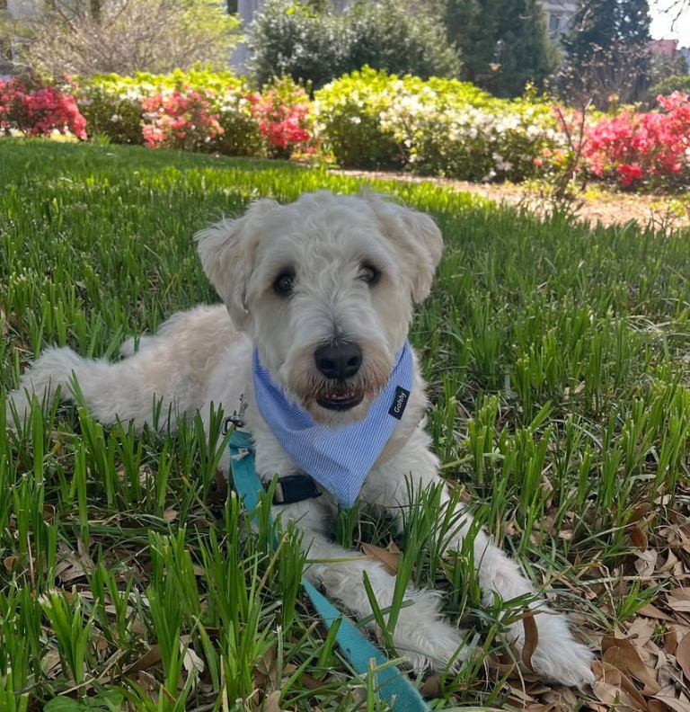
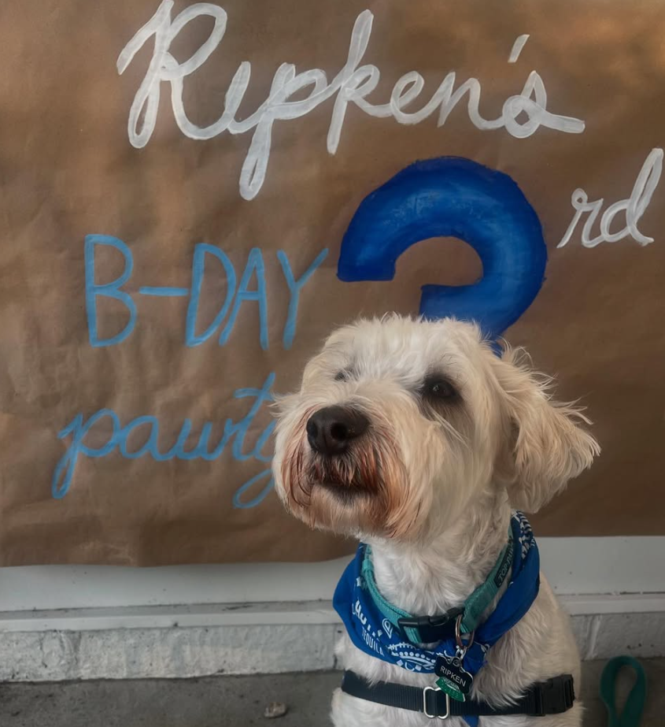

My dog, Ripken, is a 3 year old Soft-Coated Wheaten Terrier. He was adopted from Pennsylvania by my family in Maryland. Unfortunately, he did not get along with our other dog, so he moved to college with me. He is named after baseball Hall of Famer, Cal Ripken Jr.
He doesn't love South Carolina heat, but he does enjoy looking out the window, barking at dogs, and sleeping over the air vent. He loves to chew on sticks and to visit campus. He is afraid of smoke alarms and thunderstorms. He is not the smartest dog, but he is a huge sweetheart and loves to cuddle.
 | Characteristic | Stat |
|---|---|
| Birthday | May 19th, 2022 |
| Weight | 42.5 lbs |
| Eye Color | Brown |
| Fur Color | Wheat |
Follow Ripken on Instagram!
Read more about Wheaten Terriers here!